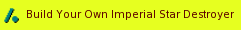
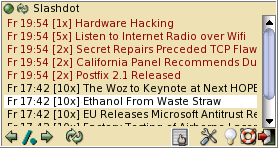
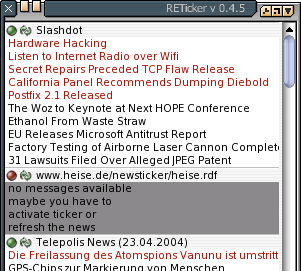

III. Bedienung
Shell-Optionen
kurze Hilfe ausgeben:
#>./start --help
debugging-messages aktivieren
#>./start -v
starte mit Konfiguration X (wenn X nicht vorhanden ist, wird X neu angelegt)
#>./start --config X
#>./start --help
debugging-messages aktivieren
#>./start -v
starte mit Konfiguration X (wenn X nicht vorhanden ist, wird X neu angelegt)
#>./start --config X
Ticker

Der Ticker zeigt jeweils eine Meldung an und wechselt nach einer einstellbaren Zeitspanne zur nächsten Nachricht. Dies wird in einer Schleife wiederholt. Neben der Nachricht wird ein Icon der news-Quelle angezeigt.Der Ticker kann mit der Maus bedient werden. Dabei werden unterschiedliche Aktionen ausgelöst, je nachdem, ob sich der Mauszeiger über der Nachricht oder dem Ticker-Icon befindet.
- Maus über dem Icon:
Klick linke Taste: öffne Webseite des Newstickers im Browser Klick rechte Taste: zeige Menu oder Active-ToolTip Mausrad: scrolle vorwärts und rückwärts durch die News-Quellen - Maus über der Nachricht:
Klick linke Taste: öffne Webseite zur Nachricht im Browser Klick rechte Taste: zeige nächste Nachricht an Mausrad: scrolle vorwärts und rückwärts durch die Nachrichten
Active-ToolTip

Der Active-ToolTip trägt diesen Namen, weil er wie ein ToolTip erscheint, wenn sich die Maus über dem Icon aufhält. Solange die Maus über dem Active-ToolTip ist, bleibt dieser angeziegt. In den Optionen kann der Active-ToolTip auch als Menu konfiguriert werden, dann wird er immer nach einem Rechtsclick auf das Icon geöffnet.Der Active-ToolTip enthält alle Messages des aktuellen newsfeeds und erlaubt, diesen feed zu aktivieren/deaktivieren oder die Nachrichten dieser Quelle aufzufrischen. Die einzelnen Nachrichten sind mit einem Farbcode versehen, der angibt, ob Nachrichten neu (werden noch im Ticker gezeigt) oder alt sind (siehe auch den nächsten Abschnitt). Zusätzlich werden Nachrichten angezeigt, welche sich im cache befinden aber nicht im Ticker angezeigt werden, weil deren Rangposition die maximal anzuzeigende Nachrichtenzahl überschreitet.
Der Active-TooTip erlaubt weiterhin, zwischen den verschiedenen news-feeds zu blättern. In den Optionen kann dabei eingestellt werden, ob ebenso inactive news-feeds oder feeds, welche keine neuen Nachrichten enthalten, angezeigt werden sollen.
Übersichts-Fenster

Im Übersichtsfenster werden alle gecachten News angezeigt. Ein Klick mit der linken Taste auf diese News öffnet die zugehörigen Webseiten. Dabei stehen verschiedene Farben für den unterschiedlichen Status der Nachrichten (Diese Farben sind anpassbar):neue Nachricht
alte Nachricht
Nachricht im Cache
alte Nachricht
Nachricht im Cache
Wenn aktiviert, wird im Übersichtsfenster zusätzlich die Abholzeit der News, wie oft diese bereits angezeigt wurde und wenn vorhanden der Zeitstempel der Nachricht vermerkt.
Die der Nachricht vorangestellten Daten sind dabei wie folgt zu interpetieren:
Don 11:16 [Don 10:04] [3x]
Die erste Zeitangabe zeigt, wann die Nachricht abgeholt wurde, die zweite (die nur bei Tickern mit Zeitstempel für die Nachrichten angezeigt wird) zeigt den Zeitstempel der Nachricht an und das [3x] steht hier dafür, dass diese Nachricht bereits 3 mal im Ticker angezeigt wurde.